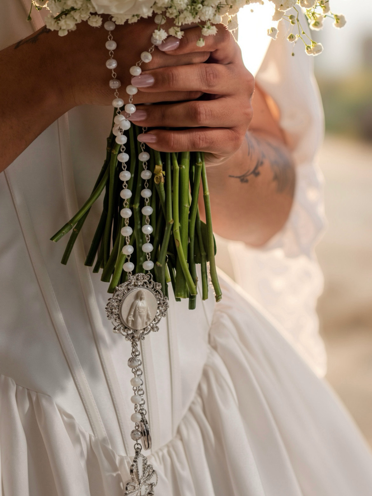
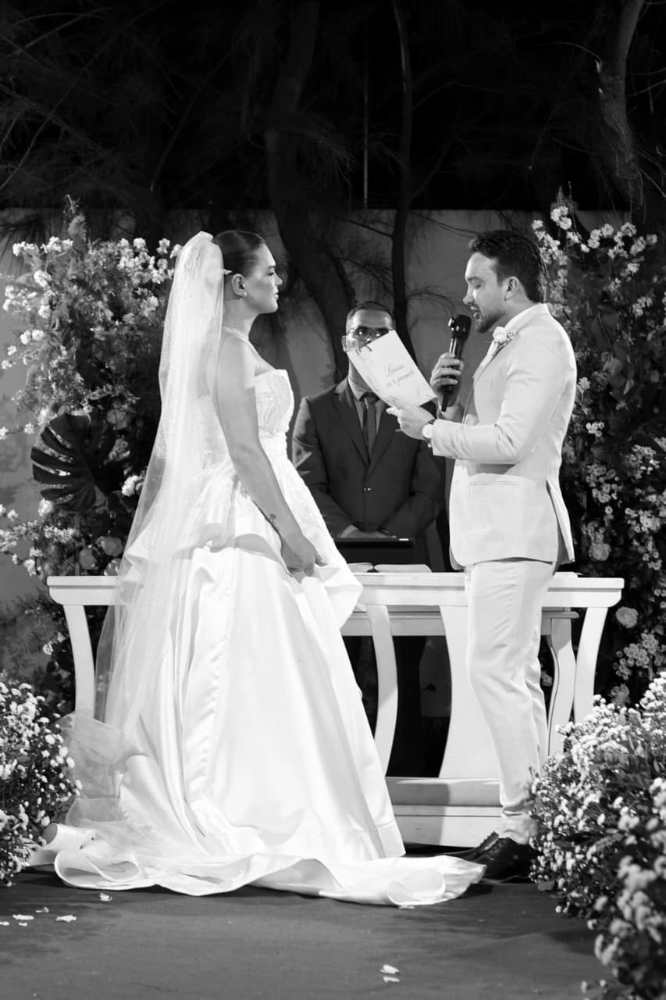

Vídeo vertical — inserir URL
Celebração
Storymaker & videomaker mobile
Registro a energia do agora para que ela possa ser sentida de novo.
De casamentos a aniversários, eventos e marcas, transformo momentos importantes em conteúdos autênticos, criativos e cheios de intenção.


Sobre
Cada ocasião tem uma energia única: encontros que emocionam, celebrações que transbordam e ideias que ganham vida. Meu trabalho é perceber esses detalhes enquanto acontecem e transformá-los em uma narrativa com verdade.
Atuo com presença leve, olhar atento e direção quando ela faz sentido. O resultado une espontaneidade, estética e estratégia — seja para guardar uma memória, compartilhar um momento ou fortalecer a presença de uma marca.
“O momento passa. A sensação pode permanecer.”
— Josyel Gomes
Portfólio
Uma seleção de celebrações, experiências e conteúdos criados para serem lembrados, compartilhados e sentidos.

Foto vertical — inserir URL
Foto vertical — inserir URLProcesso
Uma conversa para entender o seu momento, seus objetivos e o que precisa ser registrado com mais intenção.
Alinhamento de referências, roteiro, cronograma e logística para que cada captação aconteça com fluidez.
Presença atenta e direção sensível. Registro a espontaneidade, a energia e os detalhes sem tirar a verdade do momento.
Curadoria cuidadosa das melhores cenas, montadas em uma narrativa com ritmo, som e emoção.
Conteúdo finalizado em alta qualidade, pensado para emocionar, comunicar e continuar vivo onde sua história precisa estar.
Depoimentos
Contato
Conte sobre a sua celebração, evento ou projeto. Juntos, vamos criar um registro autêntico, criativo e à altura do que você quer comunicar.